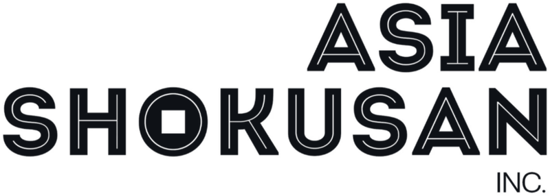
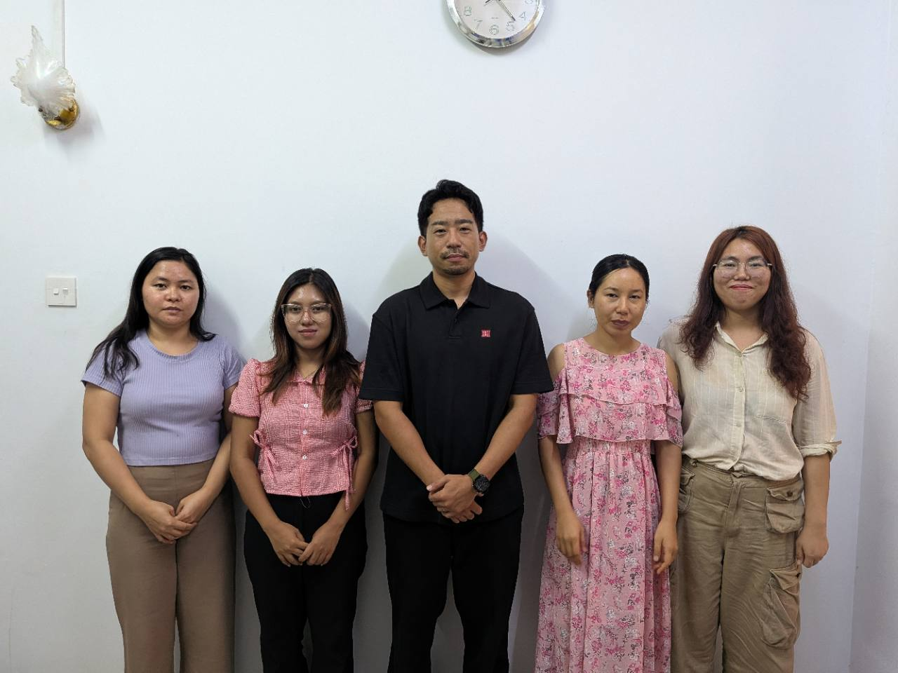
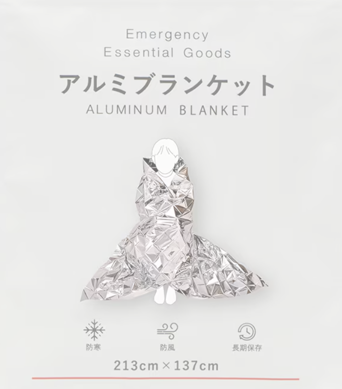
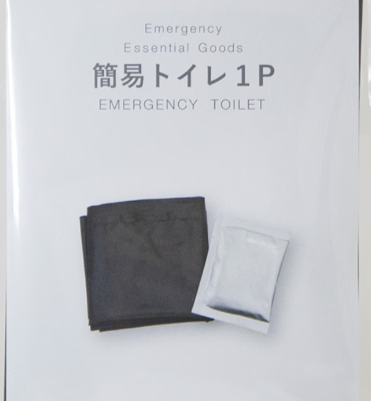
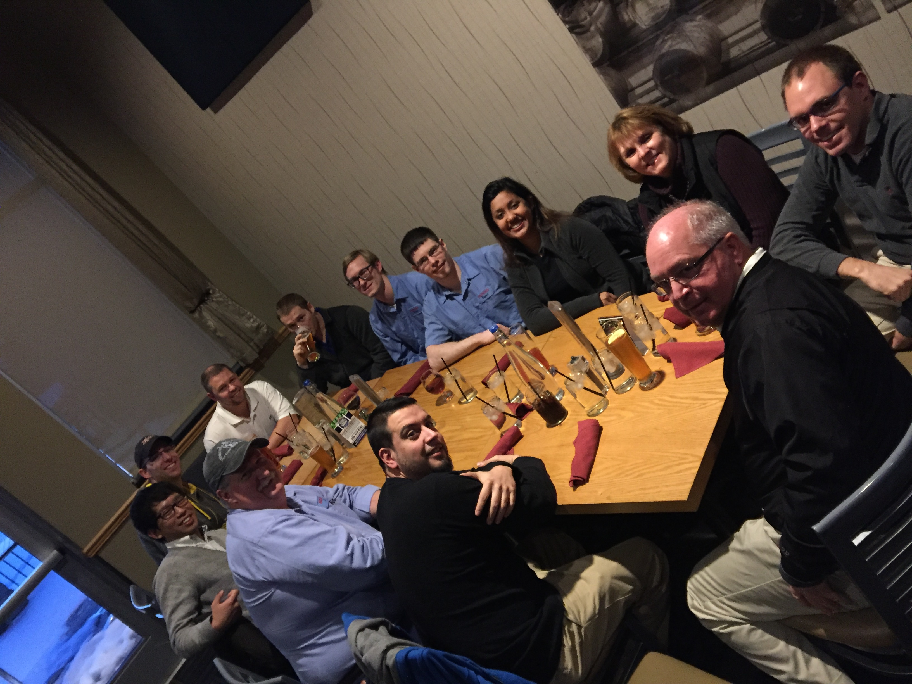
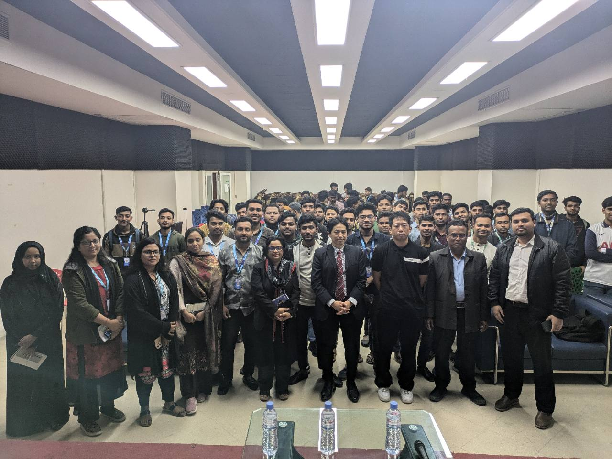
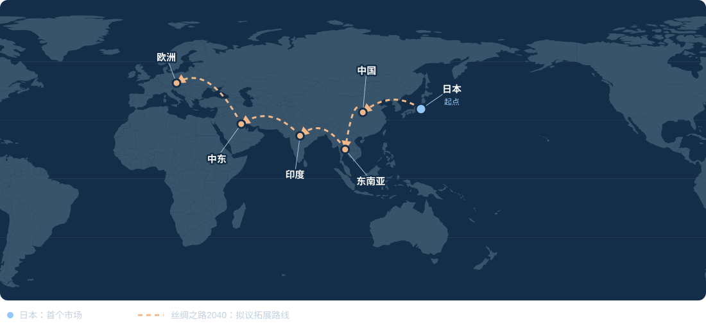
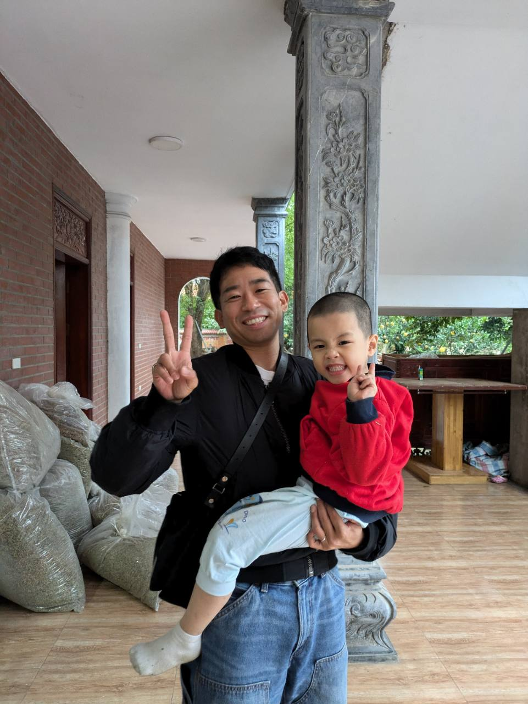
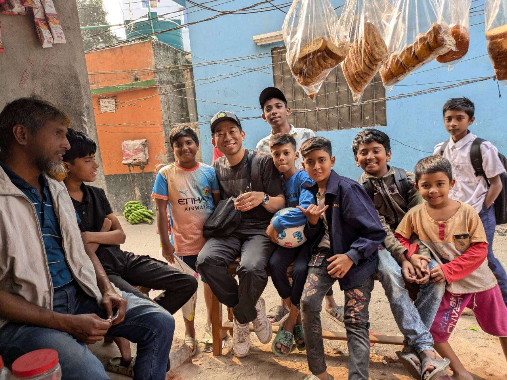
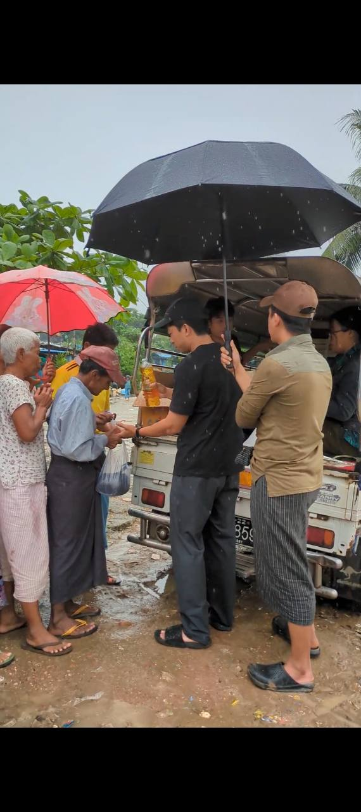

拓展三国市场。
我们在日本、缅甸和泰国开展业务，与您共同探讨适合产品的市场与销售方式。

致中国及东盟制造商
我们在日本、缅甸和泰国设有据点，为这三个市场采购产品。先付费购买样品；产品与条件合适后，双方商定小批量试单，再根据实际客户需求争取持续下单。

面向制造商
一个沟通窗口，连接曼谷、仰光、东京和札幌四个据点。
我们在日本、缅甸和泰国开展业务，与您共同探讨适合产品的市场与销售方式。
负责人山田拥有机械工程硕士学位，曾在株式会社电装（DENSO）及DENSO Manufacturing Michigan, Inc.从事生产技术工作共五年，其中包括一年美国派驻经历。
从样品或小批量开始，通过众筹等方式验证客户反应，再根据结果扩大投入。
产品示例
铝膜应急毯、应急厕所等是我们与制造商洽谈的产品示例。图片不代表已完成的销售业绩。


如何开始合作
我们的基本合作方式是向制造商采购产品。每笔订单均以双方就价格、数量及责任分工达成一致为前提。
双方共同选定产品，商定样品价格及运输条件后，由我们付费购买样品，确认规格、质量与市场适配性。
样品和条件合适后，商定小批量采购或在日本开展众筹测试。启动前确认预算、责任分工及成功标准。
根据客户反馈和销售结果，决定产品改进及追加订单。在商业可行性明确后，再商讨销售区域或独家合作条件。
也欢迎探讨其他合作方式，例如付费销售支持，或双方共同出资、分阶段推进的市场测试。工作范围、费用及阶段目标另行协商。
第一步：添加微信，或通过邮件发送一张产品照片或一个目录链接。之后再商定样品条件或线上会议时间。联系山田 →
01 / 支撑业务的经历
2012年毕业于日本国立大学研究生院，取得机械工程硕士学位，随后在电装（DENSO）从事生产技术工作。
在DENSO Manufacturing Michigan, Inc.派驻一年后离职。在日本及美国共从事五年生产技术工作。
2017年移居缅甸，在仰光共同创办BKU，并在充满变化的时期持续建设和经营业务。
移居泰国并开始贸易业务。以曼谷为基地，创立了 Asia Shokusan Inc.。


02 / 长期愿景
从日本起步放眼长远，
一步一步，务实前行。
这是连接日本、中国、东南亚、印度、中东及欧洲制造商与市场的长期愿景。第一步从日本开始。

03 / 社会公益
我还创办了重视志愿服务与社区支持的Asia Shokusan Inc.。
在此之前，我就一直通过捐出部分营业收入，支持缅甸贫困地区的社区及越南的孤儿院等。



聊聊您的产品。